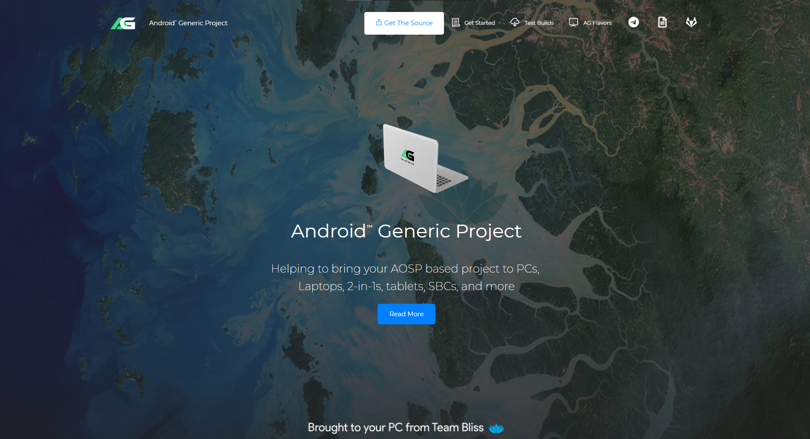

Legal
Bliss OS is dual-licensed. This page is the legal notice for that setup: GPL v3, commercial licenses from Navotpala Tech, educational licenses, and third-party code. It is not the contributor onboarding page.
Bliss OS can be used under a few different licenses, depending on what you are doing.
Appropriate for the development of Bliss OS applications provided you can comply with the terms and conditions of the GNU GPL version 3.
Appropriate for development of proprietary/commercial software where you do not want to share any source code with third parties or otherwise cannot comply with the terms of the GNU GPL version 3.
Available for students and educators in qualified educational institutions or universities.
Companies: public Gapps / Native Bridge / proprietary builds are not a production license. Shipping Bliss OS images that include Google services, Native Bridge, Widevine, proprietary fonts, or other proprietary services in a product, kiosk, device, or customer-facing system, without a commercial license from Navotpala Tech (Bliss Co-Labs Inc.), is not permitted. "We downloaded the ISO" is not compliance. See the FAQ below.
Any alterations to the Bliss OS source or compiled images, including repackaging, distribution of altered images, or removal of included system components, is subject to license compliance requirements. If you are unable to comply with the terms and conditions of the GNU GPL version 3, you must obtain a commercial license from Navotpala Tech (Bliss Co-Labs Inc.) to use Bliss OS.
For open-source licensed Bliss OS, some specific parts (Bass OS addons) are available under the GNU General Public License (GPL). For commercial licensees, all Bass OS addons are available under commercial Bliss OS licenses.
Bliss OS documentation is available under commercial licenses from Navotpala Tech (Bliss Co-Labs Inc.), and under the terms of the GNU Free Documentation License (FDL) version 1.3, as published by the Free Software Foundation.
To purchase a Bliss OS license, contact us with your request. For further information and assistance about Bliss OS licensing, contact us as well.
Request pricingBliss OS also contains third-party code that is licensed under specific open-source licenses from the original authors.
Bliss OS inherits the same Apache v2 licensing that AOSP uses for most of the components, while many of the other components like Android-Generic Project use GPL-2.0. For product use, we do not include proprietary components like Google Apps, Native-Bridge, and Widevine. Public images that do include those (or proprietary fonts and services) are still not a commercial license to ship them. Some features and toolkits like our rebranding toolkit would require additional licensing to be obtained by the customer.
If you represent a company, start here: Gapps, Native Bridge, Widevine, proprietary fonts, and proprietary services in public Bliss OS images are for individuals only. Using those builds in production is not an implied license. The allowed commercial path is OSS vanilla/FOSS/Bass as-is (or with source contributed back), or a paid commercial license.
Limited: not the public Gapps ISOs
Not if you are using the public Gapps or Native Bridge images. Public Gapps, Native Bridge, Widevine, and other proprietary-font or proprietary-service images are not licensed for commercial or production use. Putting those ISOs on devices, kiosks, signage, thin clients, or customer hardware (even "as-is", even internally) is not allowed without a commercial license.
What companies may evaluate or ship without a paid Bliss license is only the minimal path: public Vanilla and FOSS Bliss OS, Bass OS (bare-bones with added configurability), and AOSP builds with basic x86/x86_64 PC hardware support. Those come with no Google Apps, Native Bridge, or Widevine. They are basic. If your product needs nothing beyond that public OSS image and you make no closed modifications, you may use it at no cost.
If you need Google Apps, ARM/ARM64 Native Bridge, Widevine, proprietary fonts, or closed-source changes, that is a licensing question, not a download. Contact us for a commercial license, alternatives that stay open-source, or Bass OS product builds.
Evaluation images for hardware makers: Bass OS test builds.
No
No. Bliss OS images that include Google Play Store / Play Services, Native Bridge, Widevine, proprietary fonts, or other proprietary services are not fit for commercial use and are not meant to be included in products. They contain third-party proprietary components that typically require per-product licensing through Google, Intel, or others. Bliss OS public releases do not grant you those licenses.
That includes:
Vanilla and FOSS (bare-bones) public builds are the company-safe images, and they do not contain those proprietary resources. Most proprietary licenses are not eligible for generic OS setups; some require single-device certification (CTS). To explore certification or a commercial license, contact us.
Finding a public Gapps ISO on an old mirror does not change this. Those snapshots were published for individuals.
Yes, for personal use
Yes. Bliss OS public releases are designed to be used as a daily replacement for Windows, ChromeOS, Mac OS or Linux, and work is consistently being done to improve the user experience. Gapps and other proprietary-option builds are a personal-use convenience, not a commercial grant.
We offer users multiple types of builds to help fit their needs:
Present, not a product license
Yes. Our GMS/Gapps releases include proprietary software, and are intended for individuals only. FOSS and Vanilla builds might include some proprietary parts as well (typically firmware, drivers, or codecs). None of that is permission to ship those bits in a commercial product.
Proprietary redistributables in all Bliss OS public builds:
Extra proprietary redistributables in Bliss OS Gapps builds include Google Play Services and Google Play Store. Companies that need Play, Native Bridge, Widevine, or similar must obtain the proper licenses through us and/or the original vendors, not by copying a public ISO.
Yes, with conditions
Yes, for the open-source trees. This applies to Android-PC (AOSP), Bliss OS, Bliss OS Go or Bliss sources, not to proprietary add-ons (Gapps, Native Bridge, Widevine, proprietary fonts and services) bundled in some public images.
If you are a developer, a startup, or a company and you want to use the sources, the open-source licenses allow that at no cost as long as you: A) use them as-is, B) contribute changes back, or C) publish the full source independently. "As-is" means the OSS source, not a Gapps ISO dropped onto a device.
If you would like to use our source and make changes to it that you do not plan on releasing as open-source, we request you contact us to work out a per-device licensing agreement and/or setup a development contract for branding, optimizations and specific needs.
Depends on the repo
This all depends on where the changes in the source were made, as many repos in the project retain different OSS licenses, there are different requirements per repo. If you are unsure if your company needs to release the source for any of the changes made, please feel free to contact us. Closed modifications plus a public Gapps image is still not a valid commercial setup.
Another thing to pay attention to is if the tools being used require the end product or alterations to be released. Some Apache 2.0 licensed projects allow for that requirement to be made. Some versions of Android-Generic Project also have similar licensing requirements. We have put together a toolkit to help identify these types of licenses within the source. You can find that here.
Navotpala Tech (our commercial sponsor) maintains Bass OS and Bass Toolkit on top of Bliss OS and Android-Generic. They add features, strip unlicensable bits, and ship builds meant for devices.
OEM toolkits, unattended install, and other customization.
Contract work for device tuning and bring-up when a stock image is not enough.
We offer OTA updates for a variety of hardware and offer Long Term Service contracts as well.

We develop a few different tools and one of them is Android Generic Project (AG), a rapid prototyping toolkit for Android on PC (x86) hardware.
AG uses GNU General Public License v2.0.
Android-GenericIf you decide to include our work in your project or product, we would appreciate you including a link to BlissLabs as well as the projects you used. We have included a branding guide below for your convenience if you also choose to represent our branding in your project.
We offer a loose branding guide for our partners to follow. Feel free to contact us with any questions you may have.
Branding guideWe have a few assets for our partners to use in their designs. Please see below for a few options and feel free to contact us for more if you are in need.
We recommend all software included in Bliss OS releases be inspected and agreed upon through official involvement with BlissLabs in order to ensure user privacy and security guidelines. All third-party software must also agree to present source code for us to inspect as well. Failure to do this may void any support contracts or retail contracts.
We try to offer a wide variety of licensing options that cater to organizations of all sizes. If you are not sure if you need a license, or just have some questions on our licensing options, please feel free to contact us. We love helping out others find the best way to contribute back to the source.
We love to hear from potential partners and offer a way for you to talk directly with the team by emailing us. If you are an existing partner or want to explore offering Bliss OS, we look forward to hearing from you.
Email social@blissos.org© 2026 BlissLabs